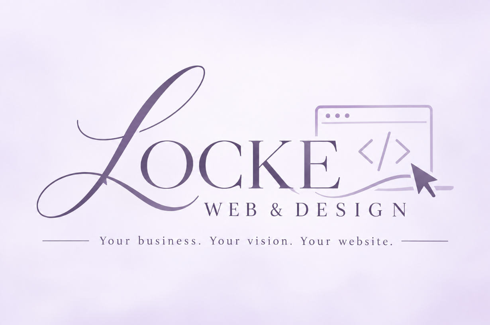

Let's Build SomethingGet to Know Me
Hi, I'm Locke!
I'm currently working toward my bachelor's degree in Information Systems Technology with a focus in cybersecurity. While technology has always interested me, I've found that one of my favorite parts of it is getting to be creative.
I genuinely love building websites and taking someone's vision and turning it into something they can actually see, use, and be proud of. Whether it's helping a small business establish its first online presence or giving an existing business a fresh place to showcase what they do, I love being part of bringing that idea to life.
Locke Web & Design started as a side business, but I hope to grow it into something much more. My goal is to continue learning, creating, and helping small businesses build an online presence that truly feels like them.
When I'm away from school, work, and my computer, you'll usually find me doing something completely different. I've ridden and competed with horses for most of my life, and they continue to be one of my biggest passions. I also love taking care of my little backyard flock of chickens, ducks, turkeys, and geese, selling fresh eggs from our mini farm, spending time with my family, and, of course, hanging out with my dog, Ollie.
Let's Bring Your Vision to LifeLOCKE WEB & DESIGN
What I Do
I create personalized websites designed around your business, your ideas, and your vision.
Website Design
Clean, personalized websites built to give your business a professional place online.
Personalized Design
Your website should feel like your business—not like a template everyone else is using.
Website Upkeep
Need new photos, updated information, or changes later? I can continue helping keep your website current.
SIMPLE FROM START TO FINISH
How It Works
Tell Me Your Idea
Tell me about your business and what you're looking for.
We Plan It Together
We'll talk through your pages, content, photos, style, and overall vision.
I Build It
I'll turn our plan into a website designed specifically for your business.
You Approve It
We'll review everything and make sure you're happy with the final result.
Your Website Goes Live
Once everything looks right, your new website is ready to share.
MY WORK
Businesses I've Had the Pleasure of Working With
Take a look at some of the businesses I've helped bring online and show them some love while you're there!
View My WorkHave an idea?
Let's bring it to life.
Not sure exactly what you need? That's okay! Tell me about your business and we can figure it out together.
Get Started